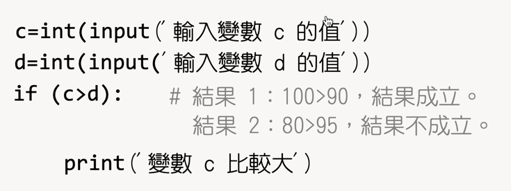

國中資科3上課本 編修意見
Table of Contents
1. 指令 v.s. 函式(function)
input(), print()均為函式而非指令，雖然python 2.x版中的input為指令：
1: print "輸出內容"
但在3.x版中，Python不再使用print指令，取而代之的是print()內建函式1，其用法為:
1: print("輸出內容")
因此不建議再使用print指令或input指令說法(本章第193頁)，建議改為print()函式，並簡述函式(function)的一般格式與用法。
2. P199
- python已支援中文變數，建議199頁中python程式的變數名稱命名可以和198頁的scratch一致，以免學生誤會python只能以英文命名
- 建議同時提供命名規則與限制
- 本頁提及保留字，並說明“不可使用保留字做為變數名稱”，是否應告知學生保留字有哪些？或是建議學生自行上網搜尋。
3. P201, 202, 203
下列程式為遷就排版空間

有沒有可能讓學生誤以為 if(c>d): 底下應該空一列，更重要的是，這段程式若原文照抄進編輯器會導致錯誤，無法執行。也許可以將註解改為多行註解模式：
1: c=int(input('輸入變數 c 的值')) 2: d=int(input('輸入變數 d 的值')) 3: ''' 4: 結果 1: 100>90，結果成立 5: 結果 2: 80>95，結果不成立。 6: ''' 7: if (c>d): 8: print('變數 c 比較大') 9:
4. P204, 205
- 如果是為了養成學生以英文命名變數的習慣，是否就直接在scratch程式中以英文命名變數，否則徒增學生對照中英變數名稱困擾
- 在204頁的scratch程式中只是“說出和”，為何在205頁的python程式中要輸出’1+2+…+’?
5. P215
- 由前述簡單的單層for迴圈，到這裡突然給了個複雜的巢狀迴圈，不知道學生的接受程度如何？
- 如果重複次數不太多，也許可以先改寫成連續的單層for迴圈，然後再導入雙層迴圈的便利性…
6. 附錄P001
建議scratch版與python版的變數命名保持一致，，否則徒增學生對照中英變數名稱困擾
7. 附錄P002
下列程式無法執行
紅色框線內為註解，前方每一列都應加上#號，若有多行註解，建議改為’’’的多行註解模式
8. 附錄P003
下列程式無法執行，原因同上
9. 附錄P005
建議scratch版與python版的變數命名保持一致，，否則徒增學生對照中英變數名稱困擾
10. 附錄P006
下列程式縮排有誤
除第2列外，所有程式前均多了一個空白，此程式無法執行
11. 附錄P009
建議scratch版與python版的變數命名保持一致，，否則徒增學生對照中英變數名稱困擾
12. 附錄P010
下列程式無法執行
紅色框線內為註解，前方每一列都應加上#號，若有多行註解，建議改為’’’註解’’’的多行註解模式